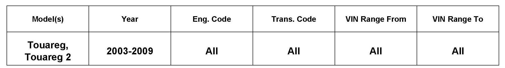
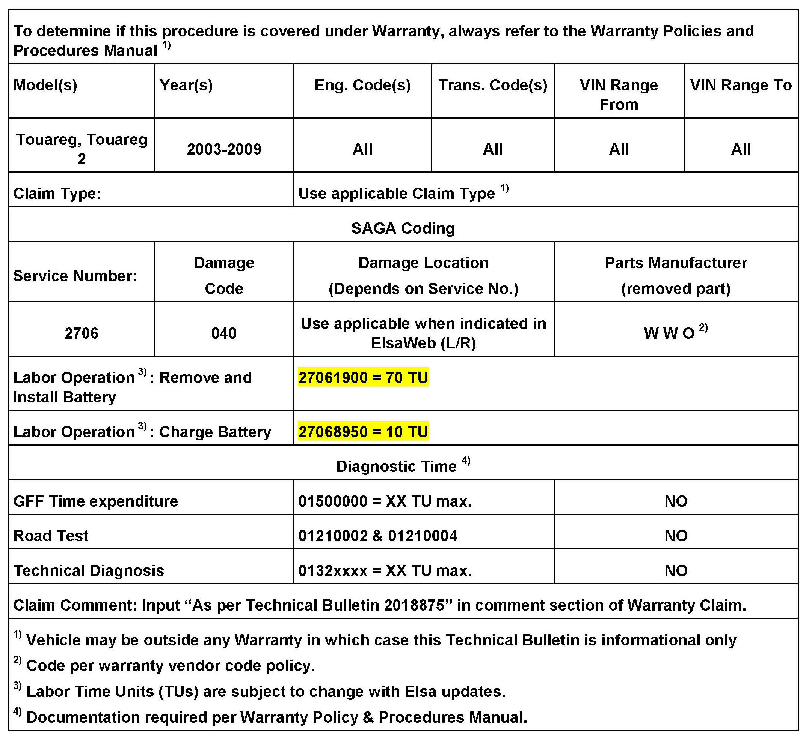
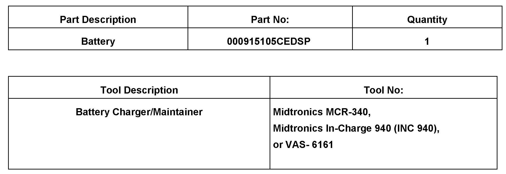

Electrical - Battery Visual Indicator Doesn't Show Green
27 11 03May 18, 2011
2018875 *Supersedes V270807 dated October 7, 2008 to update SAGA labor operation coding.*
Updated information is noted by asterisks and yellow shading.

Vehicle Information
Battery Visual Indicator for Fully Charged Battery Does Not Show Green
After correctly charging battery with INC-940, visual indicator does not turn green. INC-940 or MCR-340 test results show Battery Good".
Technical Background
Life capacity of the battery under driver seat is reduced due to acid leveling from high current charging during initial start time and/or low temperature conditions. After battery charging, INC-940 test results pass battery but will not show charged (Green) through the visual indicator.
Production Solution
Part number 000 915105 CE (AGM) battery starting MY 2009.
Service
Replace lead acid battery under driver seat with AGM battery Part No. 000915105CEDSP. (AGM = absorbed glass mat).
Tip:
Because of higher starting performance the same AGM battery can be used for all engines.

Warranty

Required Parts and Tools
All part and service references provided in this Technical Bulletin are subject to change and/or removal. Always check with your Parts Dept. and Repair Manuals for the latest information.